SOME OF MY WORK
Pedia Builder/Pediate
Download PediaBuilder(java.swing)
Download Pediate(javafx)
Users can create a "pedia" of important project terms to help them when joining a new project. Users can also quiz themselves on the terms multiple times with the question-order and answer pool changing each time.
 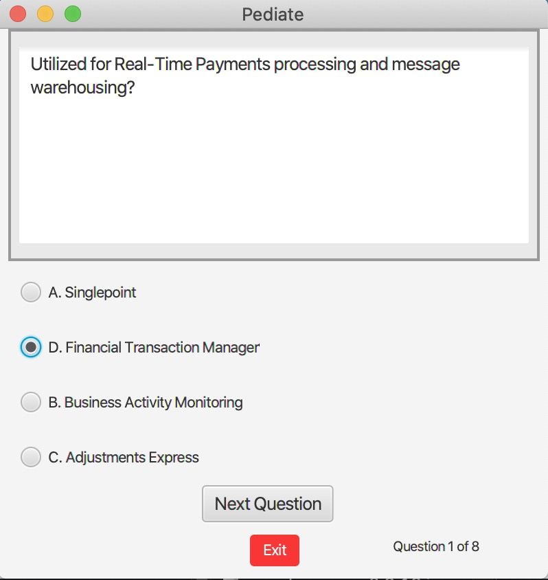
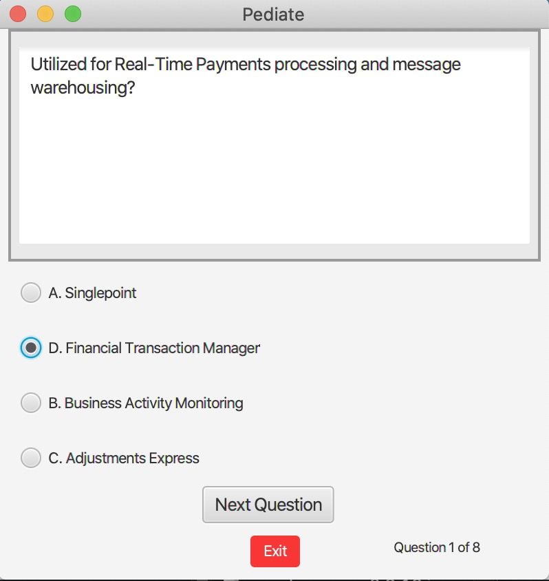
Mono Mano
A (currently) incomplete 2d game I made.
 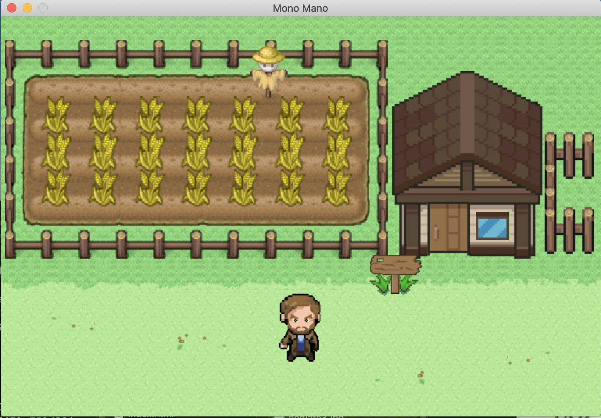
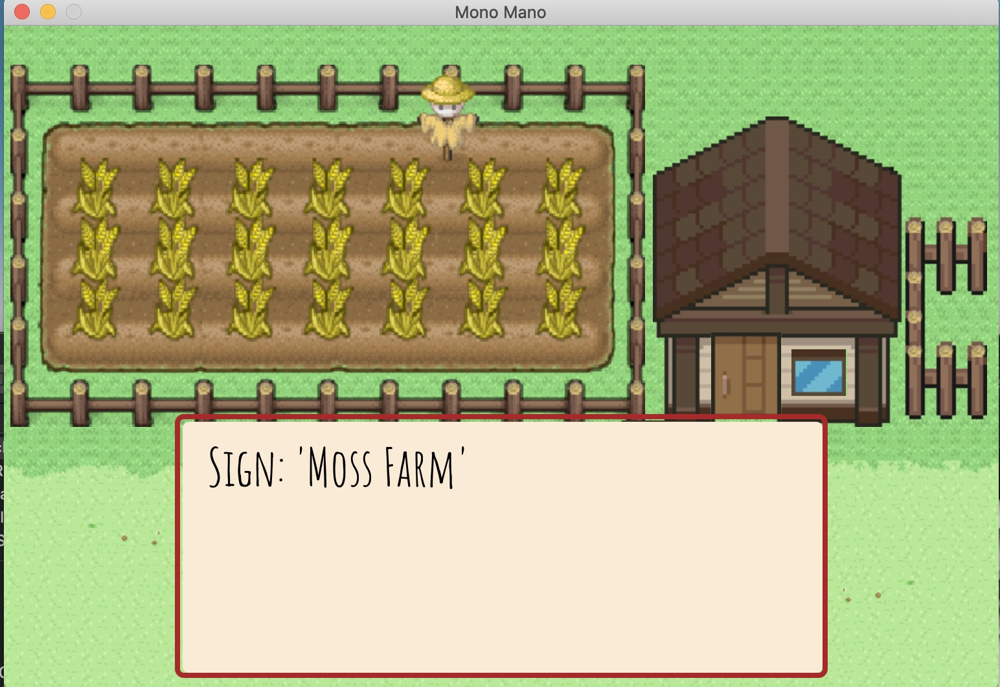
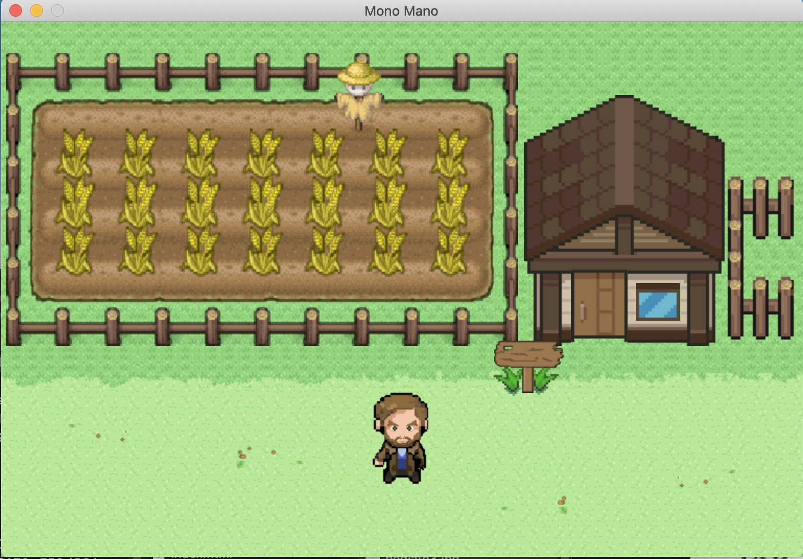
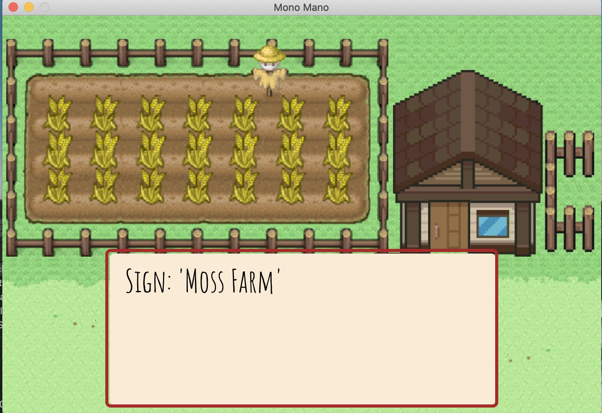
 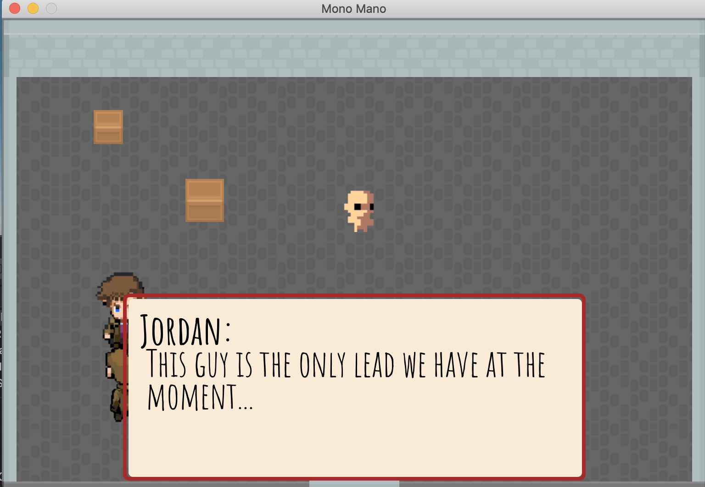
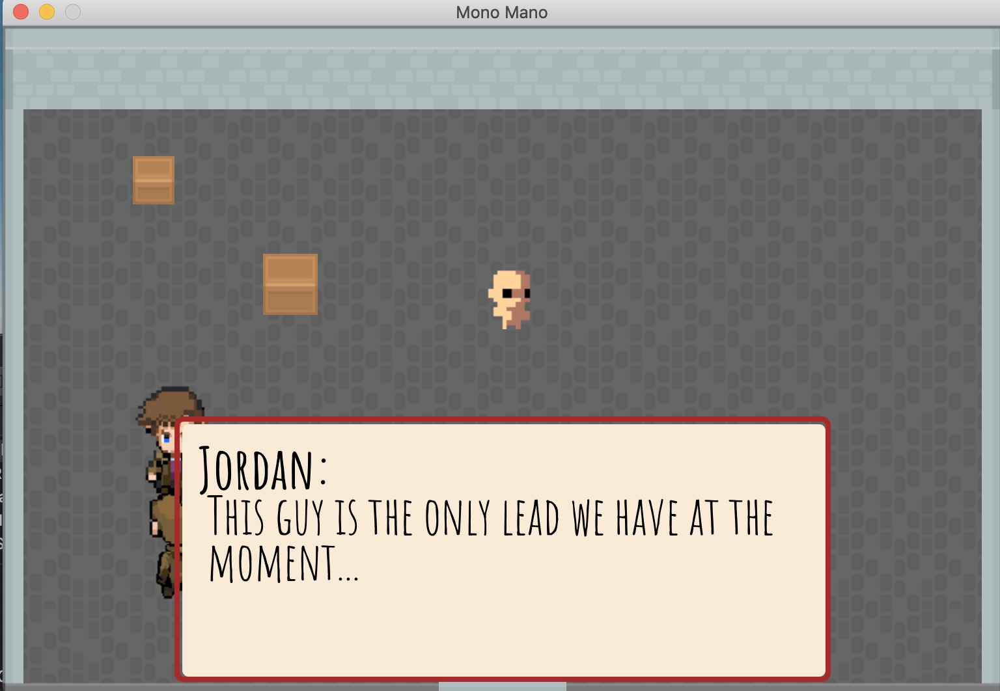
DEPRECIATION CALCULATOR
Calculates depreciation using both the straight-line and double-declining methods
 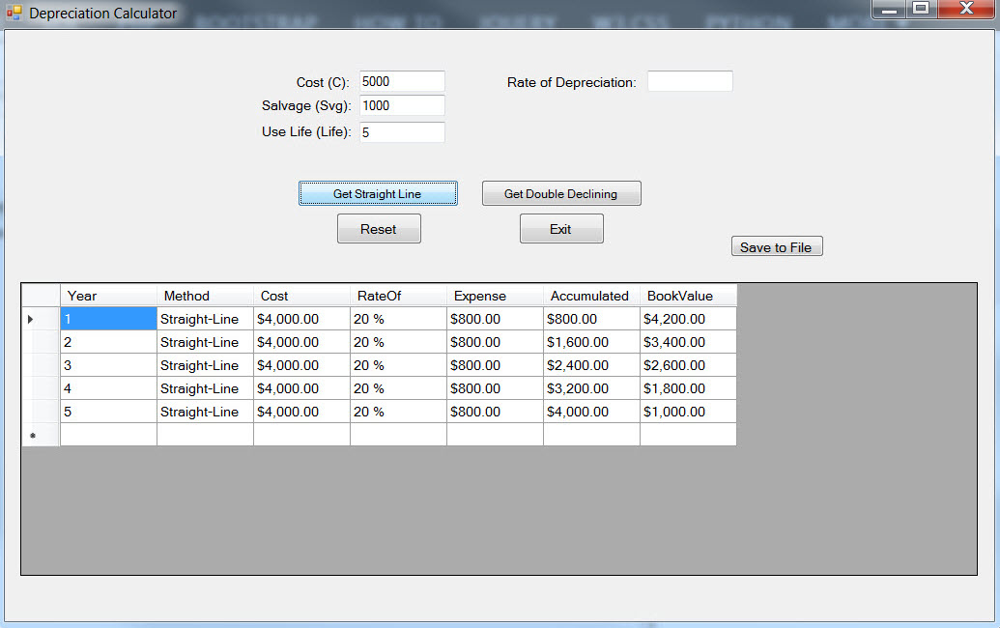
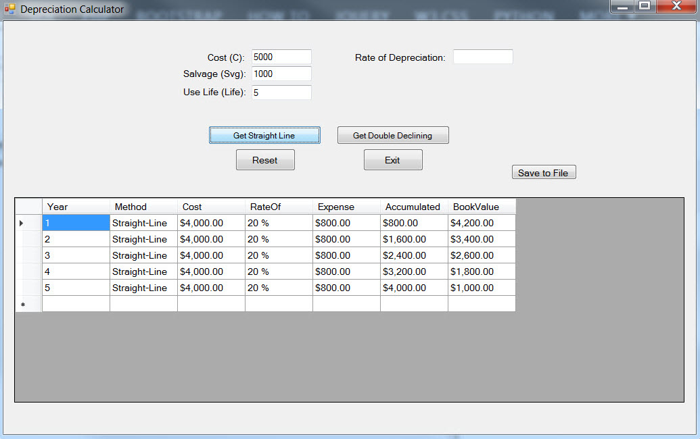

SCRIPTEASE
A tool to streamline and organize the many functions and procedures required for Government Help Desk employees.


TRACE RSE TOOL
A tool to manage and organize some of the work involved in running, recording, and reporting remote social engineering projects
Another useful feature of this program is that it allows the user to quickly locate the desired email template and copy its HTML code to the computer clipboard. It is also capable of adding new templates (locally) to its list for use in the future.


 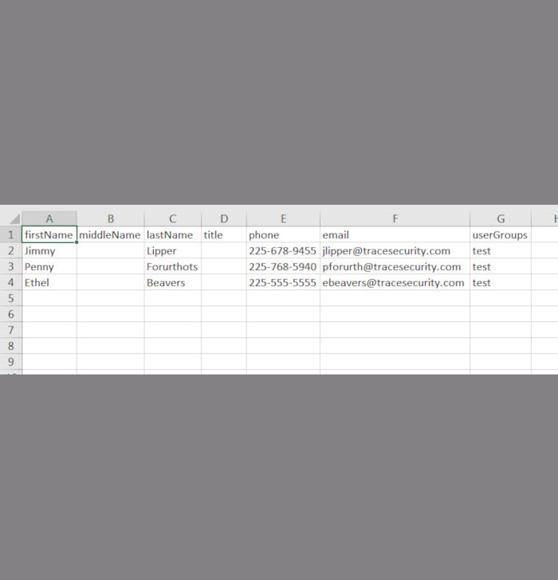
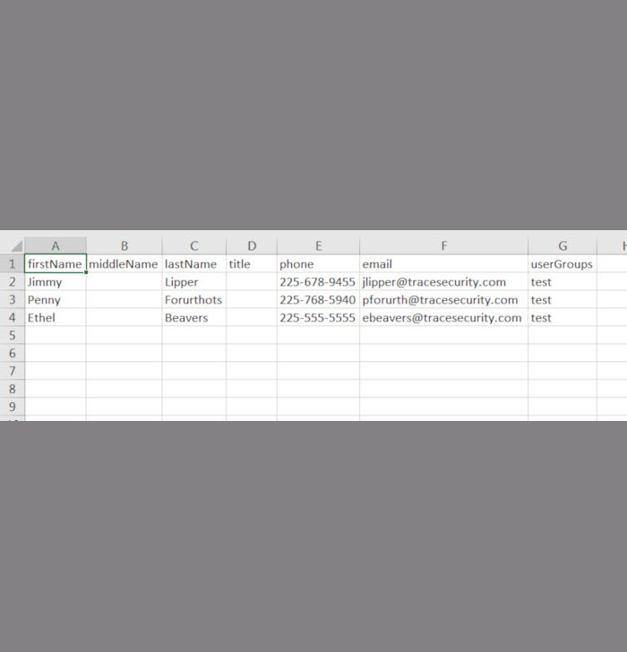

 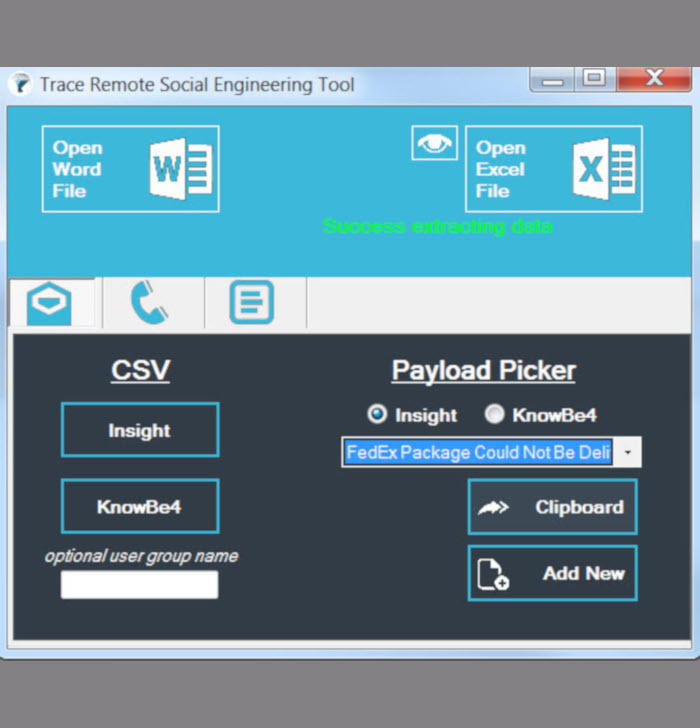
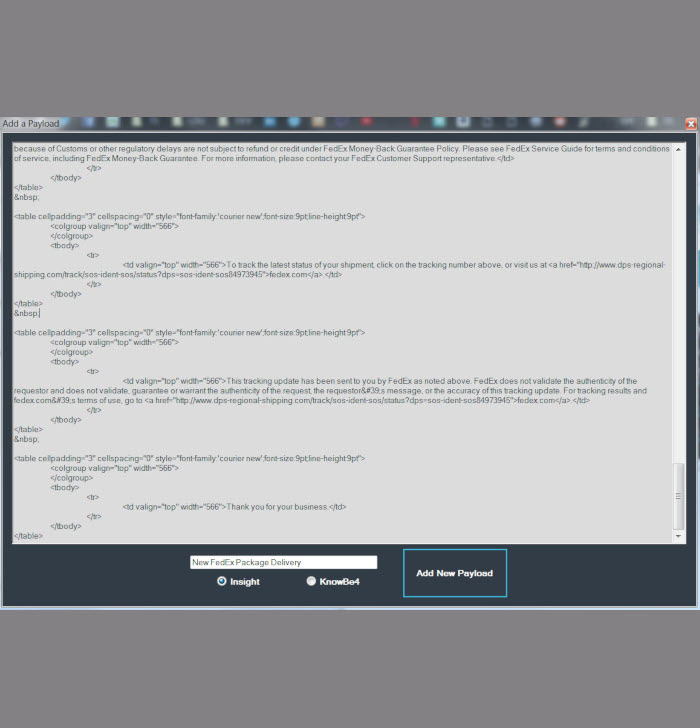
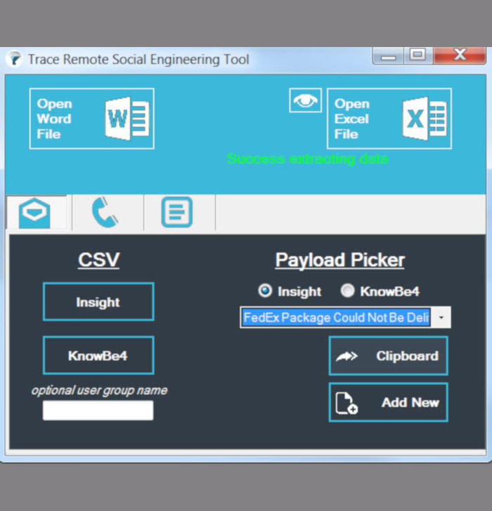
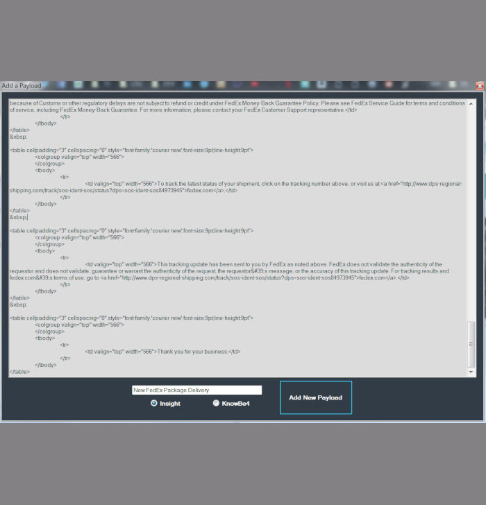